Hi, I'm Mark! I go by bearlikelion online and today we will be making Cooties, an open source tag based platformer where one is randomly selected to be infected with cooties. They then have to chase down and tag the other players to spread the infection. When all players are infected, the round ends.
The player with the highest score at the end of five rounds wins!
JustCovino on Twitch implemented Cooties' netcode to get multiplayer working in their new project
liketomorrow (Hard Meat) implemented the basics of Multiplayer for their game Nolgorb's Ordeal on Steam!
can you do like just some text in the corner that says Nolgorb's Ordeal Too - WIP or something
Think of multiplayer as two intertwined flip books going so fast your eyes don't realize that you're watching a slideshow, sort of like bridge shuffling a deck of cards.
Godot uses a system called multiplayer authority, where one peer is the owner of the node, and the other peers read and replicate it's data to display it.
In Cooties, the server owns game rules and keeps score, while each player owns their own character's position and animation.
The server assigns authority to a character during the spawn process, but we'll dive into this later.
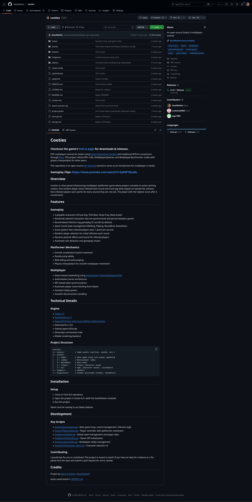
This video is not an introduction to Godot, I expect you have a solid foundation of the engine and GDScript before going further, but please feel free to watch for educational purposes.
I suggest going to github.com/bearlikelion/cooties, forking, cloning, or downloading the project's zip. Opening it in your editor and working through it alongside me.
I spend a lot of time looking at Godot projects. I find it a lot of fun to go scouring through GitHub's search for public project.godot files to see what other's are working on. When opening any project, I start with the Global Autoloads and the main scene.
Cootie's has two Autoloads, Global and SteamInit. They are both located in the yellow Singletons folder in the project. Also, use folder colors, they're really awesome and help you navigate larger projects helping you know exactly what kind of file you're working with.
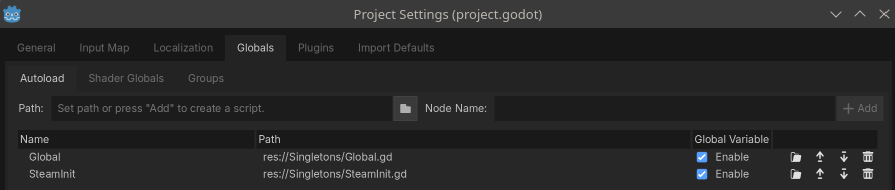
The Global.gd is mostly used for our netcode. It handles peers connecting and disconnecting, has a helper enum for which characer you are, and keeps a Dictionary of the player information that it synchronizes between peers.
In my games I use a Main.tscn where the Global autoload is responsible for changing out the Level node. The level node is the spawn_path for a MultiplayerSpawner node which synchronizes the current scene between peers.
The SteamInit.gd is a simple class that handles processing our callbacks from Steam. At ready, it tells Steam this is application id 480 (Spacewar, the free developer testing app) and grab's our account's Persona Name from Steam directly, for use later.
Now that we're in the project and understand the overall architecture, it's time to begin establishing our connections, but before that, a quick word from our sponsor.
This video doesn't actually have a sponsor, but I wanted to tell you about my game SurfsUp on Steam. SurfsUp is a free-to-play multiplayer recreation of Counter-Strike surf and other movement modes, written in the Godot game engine. It contains bunny hop and parquor/climb maps, similar to OnlyUp! It's something I'm insanely proud of, and was made by a small 3 person team consisting of Me, Nerdiful, and my wife Carina, and if you've picked up on it, there's an out of order Steam key displayed during the video
Thanks, and please checkout SurfsUp! Try it with some friends and have a good time, it's free!
In order to get started with multiplayer, we first must establish a connection between peers. A peer is just another player you are connected to. Godot's has this incredible class called the MultiplayerPeer. It's an abstract class meant to be overwritten to implement whatever network techology you're using. In Cooties, we use both the EnetMultiplayerPeer, and the SteamMultiplayerPeer.
Simply put, you create a class based multiplayer peer, establish a connection, and then override Godot's multiplayer.multiplayer_peerwith your new multiplayer peer override.
You pick a backend, create a peer, and assign it to multiplayer.multiplayer_peer.
We're going to begin by going over the ENet Multiplayer peer.
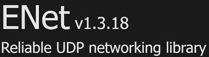
ENet is your traditinal networking library and connection. It requires an IP Adress with a Port to connect to, meaning you'll have to open the port you use in your router or firewall for external connections. It's fast, light, simple, and straight forward. But has the complexity of requiring an open port.
You can see how we host a server using ENET at: res://Scenes/MainMenu/main_menu.gd:127
match backend.selected:
MultiplayerBackend.ENET:
print("Creating ENET Server")
var peer: ENetMultiplayerPeer = ENetMultiplayerPeer.new()
var error: Error = peer.create_server(7777, 4)
if error:
print("Server Error: %s" % error)
else:
multiplayer.multiplayer_peer = peer
Global.add_local_player()
Global.change_level("res://Scenes/Lobby/lobby.tscn")We create a new ENetMultiplayerPeer, create a server on port 7777 that allows for 4 players, and then override Godot's multiplayer_peer as long as there's no errors.
Connecting to an ENet server as a client is just as simple, it requires the IP Address and the 7777 port is hardcoded. This code can be found at: res://Scenes/MainMenu/main_menu.gd:143
func _on_connect_pressed() -> void:
var peer: ENetMultiplayerPeer = ENetMultiplayerPeer.new()
var error: Error = peer.create_client(ip_address.text, 7777)
if error:
print("Client Error: %s" % error)
else:
Global.ip_address = ip_address.text
multiplayer.multiplayer_peer = peer
# Wait for player data to sync from server
await Global.players_synced
Global.change_level("res://Scenes/Lobby/lobby.tscn")Again, we establish a new ENetMultiplayerPeer, but this time we create a client, instead of a server. The parameters are now the IP Address and Port we are connecting to, instead of the port and max_players like in create_server. As long as there's no errors, we wait for the server to send the players_syncedsignal, then we change to the game's lobby.tscn
While ENet allows us to establish direct connections tp an IP Address and Port directly, Steam handles things quite differently. Instead we connect to a Lobby ID or a user's Steam ID. But it does provide the massive benefit of establishing the connection for us, so there's no need for firewall exclusions or port forwarding.
This requires us connecting to the signals emitted through the Godot Steam extension.
At main_menu.gd:25 you can see us establish these connections:
Steam.lobby_match_list.connect(_on_lobby_match_list)
Steam.lobby_created.connect(_on_lobby_created)
Steam.lobby_joined.connect(_on_lobby_joined)The three main signals for Steam multiplayer are:
Each of these signals are unique and have different code paths, lets start with creating a lobby.
When the Steam backend is selected, pressing the host button creates a Steam lobby:
func _on_host_game_pressed() -> void:
match backend.selected:
MultiplayerBackend.STEAM:
print("Hosting Steam Lobby")
Steam.createLobby(Steam.LobbyType.LOBBY_TYPE_PUBLIC, 4)This is a simple one line call, you define the LobbyType and the max players, the main lobby types are:
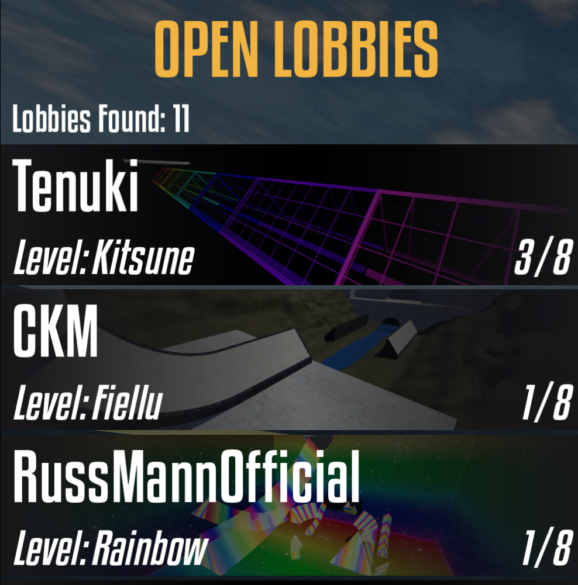
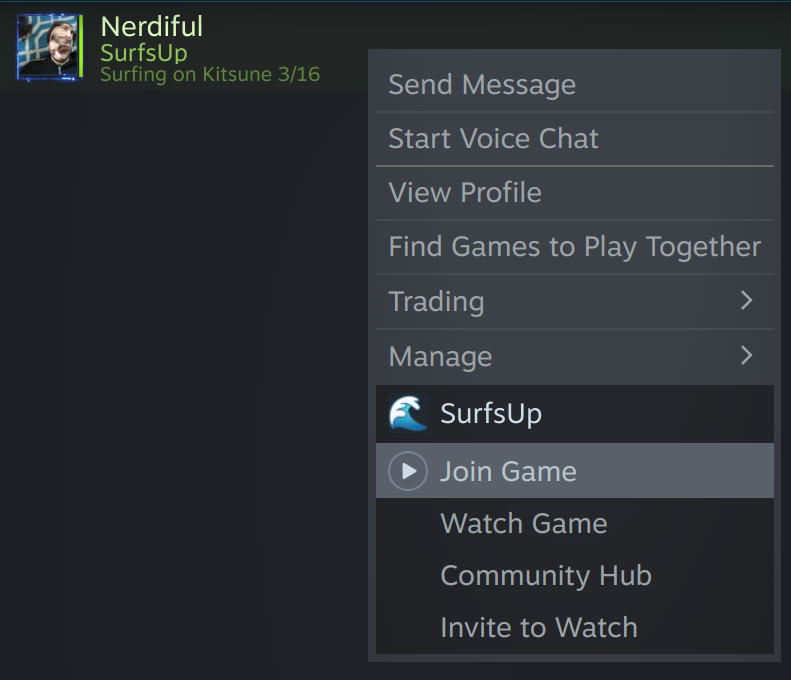
Once the lobby is created, Godot Steam emits the lobby_created signal triggering the _on_lobby_created function:
func _on_lobby_created(connected: int, lobby_id: int) -> void:
if connected == 1:
print("Created lobby %s" % lobby_id)
SteamInit.lobby_id = lobby_id
SteamInit.peer.host_with_lobby(lobby_id) # Use Steam MultiplayerPeer
multiplayer.multiplayer_peer = SteamInit.peer
Steam.setLobbyJoinable(lobby_id, true)
Steam.setLobbyData(lobby_id, "name", Steam.getPersonaName() + "'s lobby")
Steam.setLobbyData(lobby_id, "game", "GodotCootiesMPTutorial")
var set_relay: bool = Steam.allowP2PPacketRelay(true)
print("Allowing Steam to relay backup: %s" % set_relay)
Global.add_local_player()We first confirm the connection is properly established, then save the lobby's id to the SteamInit.lobby_id variable for later use. Then we have to tell the Steam Multiplayer Peer that we are hosting this lobby, passing in the lobby's id. This allows other players to establish a connection.
After that we set the lobby as joinable and set the meta data of the lobby's name and game which is used for lobby list filtering. I also enable P2PPacketRelay. If a client fails to directly connect to another client, it will instead utilize Steam's servers to relay that connection as a fall back.
Finally I add our local player into the Global.players for use later.
Okay, we've now created a lobby, hosted it to others, and set the meta data so people can find us and see who the host is. But, that's just the start, now we need to join a lobby.
When a players pressed the Join Game button, if the Steam backend is selected we execute the get_lobbies function at main_menu.gd:108
func get_lobbies() -> void:
print("Requesting lobby list")
Steam.addRequestLobbyListDistanceFilter(Steam.LOBBY_DISTANCE_FILTER_WORLDWIDE) # Get ALL lobbies
Steam.addRequestLobbyListStringFilter("game", "GodotCootiesMPTutorial", Steam.LobbyComparison.LOBBY_COMPARISON_EQUAL)
Steam.requestLobbyList()This function establishes our lobby filters, we are searching for all lobbies worldwide whose "game" metadata is exactly "GodotCootiesMPTutorial". Then we request the list of lobbies from Steam, which emits the lobby_match_list signal we connected to earlier, executing the _on_lobby_match_list function.
func _on_lobby_match_list(lobbies: Array) -> void:
print("Lobbies Found: %s" % lobbies.size())
for lobby_id: int in lobbies:
var lobby_name: String = Steam.getLobbyData(lobby_id, "name")
var lobby_players: int = Steam.getNumLobbyMembers(lobby_id)
# Create join lobby button
var lobby_button: Button = Button.new()
lobby_button.text = "%s - %d players" % [lobby_name, lobby_players]
lobby_button.name = "lobby_" + str(lobby_id)
lobby_button.add_to_group("lobby_button")
lobby_button.pressed.connect(join_lobby.bind(lobby_id))
lobby_list.add_child(lobby_button)The lobbies list is just an array of integer lobby IDs that matched our filters. We then have to fetch the lobby name and number of players from Steam and create a button in Godot that tells the game which lobby we are trying to join. I name each button as lobby_id and connect the button pressed signal to the join_lobby function passing the lobby's ID as a parameter.
func join_lobby(lobby_id: int) -> void:
print("Attempting to join lobby %s" % lobby_id)
for lobby_button: Button in get_tree().get_nodes_in_group("lobby_button"):
lobby_button.disabled = true
Steam.joinLobby(lobby_id)Joining the lobby is easy, we disable all the other lobby buttons so a player cannot attempt to join multiple lobbies, and we tell Steam join this lobby ID. Steam then emits the lobby_joined signal firing off our _on_lobby_joined
func _on_lobby_joined(lobby_id: int, _permissions: int, _locked: bool, _response: int) -> void:
if Steam.getLobbyOwner(lobby_id) == Steam.getSteamID():
Global.change_level("res://Scenes/Lobby/lobby.tscn")
return
SteamInit.lobby_id = lobby_id
SteamInit.peer.connect_to_lobby(lobby_id)
multiplayer.multiplayer_peer = SteamInit.peer
# Wait for player data to sync from server
await Global.players_synced
Global.change_level("res://Scenes/Lobby/lobby.tscn")This is the trickiest bit of the Steam connection. Anyone who hosts a lobby, also joins their own lobby. So we have a catch if the lobby owner (or host) is the one joining, immediately send them to the lobby screen since we've already previously established the connect and overrode Godot's multiplayer_peer in the _on_lobby_created function.
If the peer joining the lobby is a new client, we tell the SteamMultiplayerPeer to also connect to the lobby we just told Steam to connect to. Similar to CreateLobby / HostLobby, Steam and Steam's Multiplayer Peer each need to establish the connection.
We then override Godot's Multiplayer Peer and wait for the host (or lobby owner) to synchronize the Global.players data with us.
Since Godot's multiplayer peer is an overridden abstract class, there's also libraries like the Nakama Bridge for Nakama self-hosted cross-platform dedicated server, and EOSG's Multiplayer Peer for use with the Epic Online Services for Godot plugin.
Congratulations, we've established a connection to another player! The beginning of any multiplayer game starts with connecting, now we have to start sending some data.
When connecting as a client, we await Global.players_synced that's a signal emitted by the project's Global autoload. The last step of hosting a lobby is to execute Global.add_local_player(). Adding the host's information into the Global.players dictionary. When a client first connects to a server, sotres and sends it's player information to the server using a RPC.
# Called when this client successfully connects to server
func _on_connected_to_server() -> void:
print("GLOBAL CONNECTED TO SERVER")
var local_id: int = multiplayer.get_unique_id()
# Send our player name to the server
# The server will sync back to us after receiving our name
var player_name: String = str(local_id)
if multiplayer.multiplayer_peer is SteamMultiplayerPeer:
player_name = SteamInit.steam_name
Global.players[local_id] = {
"character": -1,
"name": player_name,
"score": 0
}
send_player_to_server.rpc_id(1, Global.players[local_id])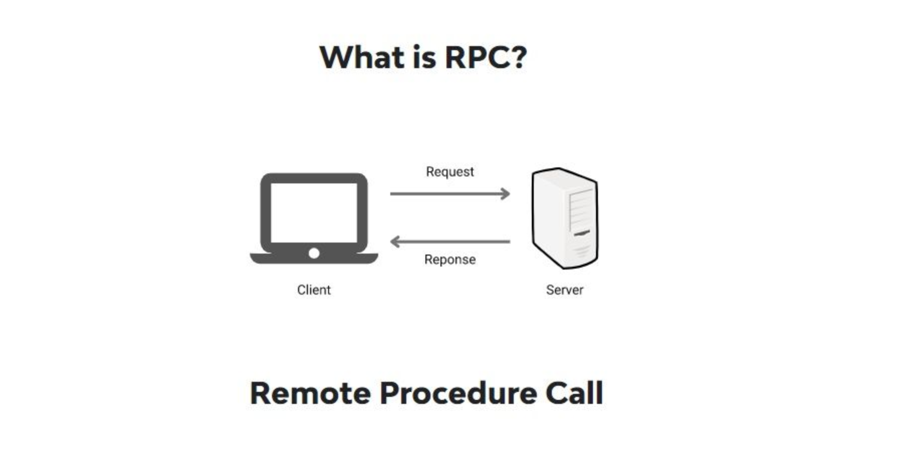
A remote procedure call (RPC) is when a computer program causes a procedure to execute on another connected computer. It's a request and response between peers.
In Godot when calling any function you can add the .rpc() or the .rpc_id() suffix to execute it on the peers. .rpc() calls it on every peer, while .rpc_id(peer_id: int) only calls it on a specific peer. Godot always sets the host as peer_id = 1, so our client is sending their player data to the host.
Global:83
@rpc("any_peer", "call_remote", "reliable")
func send_player_to_server(player: Dictionary) -> void:
if multiplayer.is_server():
print("SERVER RECEIVED PLAYER DATA")
var sender_id: int = multiplayer.get_remote_sender_id()
players[sender_id] = player
_sync_players_to_peer.rpc_id(sender_id, players)The @rpc() at the top if the function is called an annotation, it tells the engine the specifics of who, and how this function should run.
The annotation takes in three parameters, mode, sync, and transfer_mode
Mode defines WHO can send this RPC to tell others to run this code, there are only two modes:
authority - only the authority can send this request, the server is a node's authority by defaultany_peer - anyone can send this requestSync determines where the code executes, and also has two options:
call_remote - only other peers run this codecall_local- I also run this codeTransfer mode is a little more complicated, in networking there's two types of traffic, TCP (transmission control protocol) and UDP (user datagram protocol). TCP is connection-oriented and reliable, if it fails to deliver it will keep sending it until it finally arrives. UDP is connectionless, sending data as fast as possible without caring if it's delivered or not.
In Godot you can set your RPC transfer mode to:
reliable - (TCP) Resend until packers are acknowledges, preserving the ording they were sent in
unreliable - (UDP) Packets are not acknowledges, can be lost or arrive in any order
unreliable_ordered (???) Packets are received in the order they were sent in by ignoring newer packets, this often causes packet loss.
In Cooties, we send the player's ready state usingreliable RPCs.
But you could easily send data like a player's position or rotation with unreliable RPCs, but we use the GodotMultiplayerSynchronizer node for that.
When a player presses the ready button, the server checks if all players are ready lobby.gd:65 and if so sends the authoritive reliable RPC to all players to change to the game scene
lobby.gd:84
# Starts the game on all clients
@rpc("authority", "call_local", "reliable")
func _start_game() -> void:
Global.change_level("res://Scenes/Game/game.tscn")Now that all players are ready, it's time to change to our game scene and spawn everyone.
Godot's MultiplayerSpawner automatically spawns replicated nodes from the server to other peers.
You can override the spawner's spawn function to return and spawn any node you'd like
func _ready() -> void:
spawn_function = spawn_player
multiplayer.peer_disconnected.connect(_on_peer_disconnected)
# Only the server should spawn players
if multiplayer.is_server():
# Spawn all players (including server)
for peer_id: int in Global.players.keys():
call_deferred("spawn", peer_id)
func spawn_player(peer_id: int) -> Player:
var player: Player = PLAYER_SCENE.instantiate()
var spawn_point: Marker2D = spawn_points.pop_back()
player.set_multiplayer_authority(peer_id)
player.name = str(peer_id)
player.global_position = spawn_point.position
...
return playeron player_spawner.gd:22 we define the peer's player we are creating, the most important function is set_multiplayer_peer this defines which peer owns this player for input and synchronizing. We simply have the server call the spawn function, and return the node that should be spawned. Godot takes care of the rest of the hard work.
Godot provides a really easy way for us to synchronize node properties between connected clients, the Multiplayer Synchronizer node. You define the properties to replicate and how often they should. We replicate a player's position, animation, name, and if their sprite is flipped.
That nodes authority informs everyone else of it's state, and the other clients set that replicated node's properties to match.
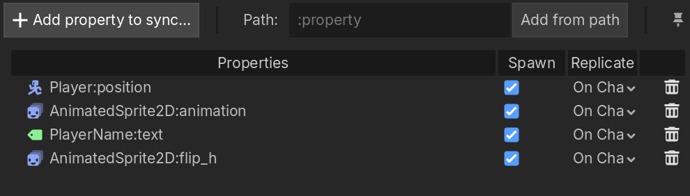
You can choose between two different visibility update modes to send the "network tick" for synchronization. During the idle (or _process) function or during the physics or (_physics_process) function. I prefer to replicate On Change during the physics tick.
Synchronizers also have a public property meaning it synchronizes to all connected peers. This is ideal for our small tutorial project, but in a bigger game like SurfsUp that has multiple synchronizers per peer, we don't need them all synchronizing at once. Instead the UI Synchronizer is not public, and we RPC who is spectating you to enable visibility of the synchronizer to only send to the specific peers spectating you.
Now we are in the game, moving around, and seeing the other players move.
By default, the multiplayer synchronizer places the peer's player puppet at the exact position it receives during synchronization. This causes a 'jitter' or irregular movement to occur.
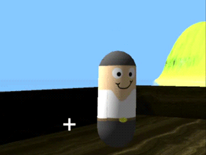
In cooties, we enable physics interpolation for the non-authority peer's puppets, meaning that other players smoothly move between positions all handled by the engine.
player.gd:43
func _ready() -> void:
...
if not is_multiplayer_authority():
physics_interpolation_mode = Node.PHYSICS_INTERPOLATION_MODE_ONInstead of snapping between positions 1 -> 2 -> 3, the engine adds half-steps between the positions going from:
1 -> 1.5 -> 2 -> 2.5 -> 3 to make the movement appear smoother.
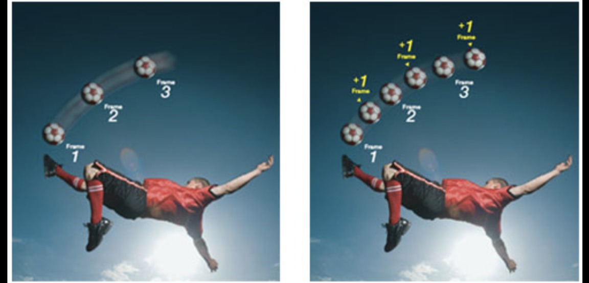
Physics interpolation needs to be enabled under the Physics -> Common project settings
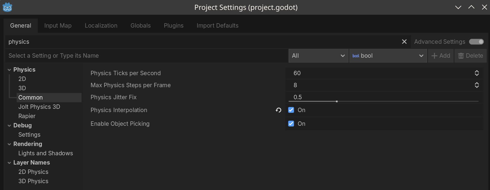
Godot's physics isn't great. We had issues with players out of sync or stomping each other to the ground and even exponentially increasing velocity shooting players across the map.
This prompted us to replace Godot's 2D Phsysics with Rapier physics. It increases performance, stability, and has cross platform determinism. Meaning all clients execute the simluation in the exact same way no matter the platform. It's a simple drop-in replacement for Godot's phsyics set in the game's project settings.
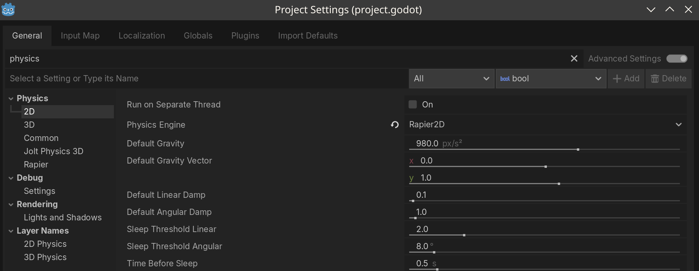
Thanks for letting me teach you about networking and multiplayer in Godot. I hope you learned something and I can't see what you make.
We learned:
If you enjoyed this content please like, subscribe, and checkout my socials.
Bye!